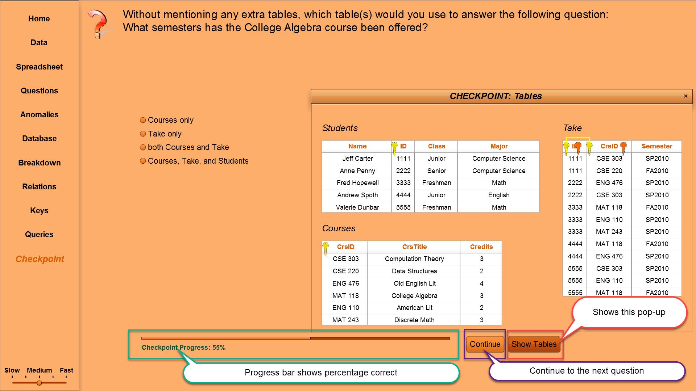
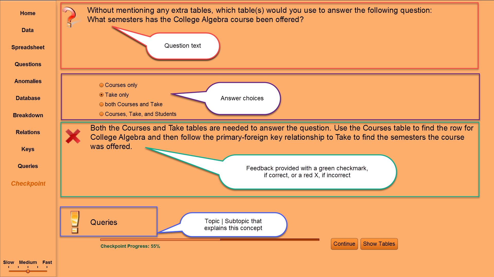
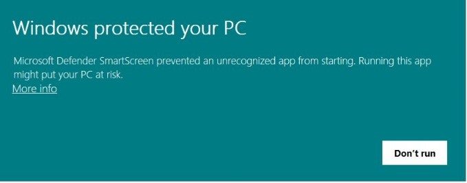
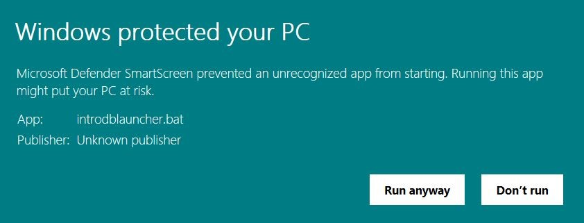
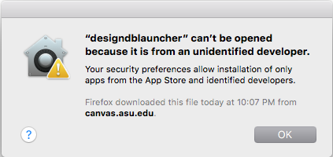
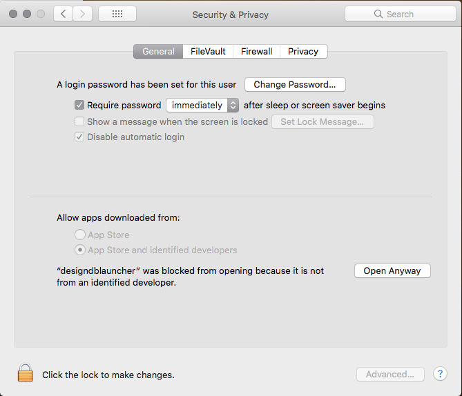
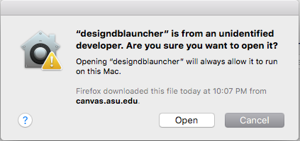

Overview
There are tabs on the Web site for each visualization:
- Introduction to Databases (IntroDB): What is a relational database and how does it differ from a spreadsheet?
- Introduction to Querying (QueryDB): How do you ask questions over data stored in a relational database?
- Conceptual Database Design (DesignDB): How do you design a relational database for your data?
The following annotated screenshot illustrates how to use the visualization.
- TOPICS: Clicking on a topic in the left margin will automatically play through its subtopics
- PLAY/PAUSE: When the visualization is playing, this button will be labeled Pause. Select this button to pause the animation, which will change the label to Play. Select this button to resume.
- SUBTOPICS: If you want to replay a particular subtopic, click on its label and then click on the Play button.
- STEP: If you want to just step through one action at a time, click the Step button at your own pace.
- SPEED CONTROL: Click on the slider to adjust the display speed of the visualization.
{kind=link}
CHECKPOINT: There are 20 multiple choice or true/false questions. These questions are randomly presented, and the order of the answer choices are also randomized. The progress bar indicates the percentage correct. A question will be included in the random selection until the question has been answered correctly. The Continue button moves to the next question, whether the current question is answered or not. The Show button will bring up a pop-up to show the additional information that may be needed to answer the question: IntroDB has a Show Tables button, QueryDB has a Show Schema button, and DesignDB has a Show Checkpoint ERD. The pop-up automatically minimizes when the mouse is not over the pop-up. Just mouse over its header to maximize. You can go back and replay topics within the animation within the same browser session without losing your progress within the checkpoint.
Click on the screenshots for a better view:
|  |  |
{kind=link}
{kind=link}
Frequently Asked Questions: Java Version
Download the zip file for your operating system and extract files into a folder. Change to the bin subfolder and choose the visualization's launcher to launch the visualization. See below for responding to the operating system's warnings to run the visualizations.
- Windows: Click More Info text on first pop-up and then Run Anyway button on second –
  - Mac: Pop-up will occur saying: "... can't be opened because it is from an unidentified developer". Go to System Preferences then Security and Privacy. On the General tab, look for the "Open Anyway" button. You may be prompted to Open again when you launch.
   - Mac Help (Catalina or later): see this document